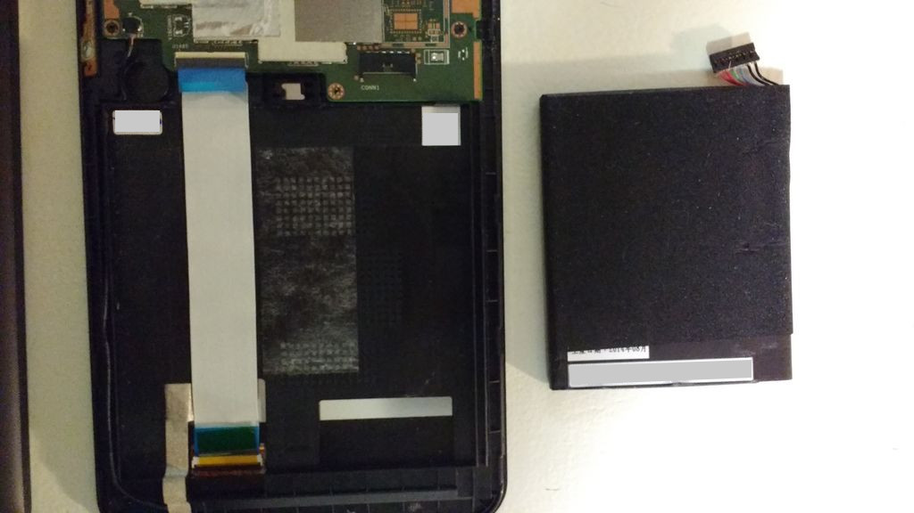

Hace días mi tablet ASUS Memo Pad 7 me180c dejó de funcionar súbitamente después de una caída de no más de medio metro. Simplemente resbaló destrás de un buró pequeño con todo y funda protectora; traté de encenderla, pero la pantalla siguó en negro. Al conectar el cargador sólo mostraba un breve flash blanco.
No tenía idea de lo que le hubiese pasado. Ya que físicamente en su exterior estaba bien; así que dediqué tiempo a buscar información sobre cómo repararla.
En ASUS la página de soporte es muy pobre en contenido; de hecho, han descontinuado mi modelo me180c.
Hay pocos videos en Youtube sobre reparación de la ASUS Memo Pad 7; me dejaron la angustia de que es muy difícil de abrir. Pero en un video mencionan la posibilidad de la batería se desconecte por una caída. Y así me pasó.

Después de varios minutos, usando un desarmador y mis uñas pude retirar la tapa.

La batería, efectivamente estaba desconectada. Grave error de diseño. Porque el espacio interior es mayor que el tamaño de la pila; basta la caída perfecta para que se desconecte y uno no lo notaría.

Insisto que es error de diseño porque el fabricante trata de sujetar la batería por una franja con adhesivo. El tiempo y el calor van a hacer que sea más débil con el paso del tiempo.

Para arreglarlo, sencillamente hay que conectar de nuevo la batería y ayudar a que se mantenga más tiempo en su lugar con cintas de aislar, como pueden ver en la última imagen.

La tapa se cierra a presión y no tiene tornillos.